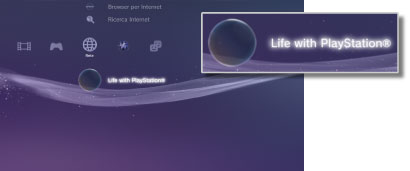

Rete > Life with PlayStation®
Life with PlayStation®
Life with PlayStation® mette a disposizione contenuto Web dinamico organizzato in canali esclusivi, che possono essere consultati a seconda di ora e luogo. È possibile utilizzare diversi tipi di contenuto selezionando un canale.
Con l'uso di Life with PlayStation®, l'utente partecipa automaticamente a Folding@home™, un progetto di elaborazione distribuita gestito dalla Stanford University.
Avvio di Life with PlayStation®
Per utilizzare Life with PlayStation®, è innanzitutto necessario scaricare e installare l'applicazione Life with PlayStation®. Selezionare  (Life with PlayStation®) in
(Life with PlayStation®) in  (Rete) per scaricare l'applicazione. Per completare l'installazione, seguire le istruzioni sullo schermo.
(Rete) per scaricare l'applicazione. Per completare l'installazione, seguire le istruzioni sullo schermo.

Note
- Per installare Life with PlayStation® sono richiesti almeno 500 MB di spazio libero sul disco rigido del sistema PS3™.
- Se viene visualizzata l'icona
 (Folding@home™), è innanzitutto necessario aggiornare l'applicazione Folding@home™, quindi aggiornare Life with PlayStation®. Selezionare (Folding@home™) in (Rete), quindi seguire le istruzioni riportate sullo schermo per aggiornare l'applicazione Folding@home™. Quindi, selezionare di nuovo (Folding@home™) in (Rete) e seguire le istruzioni riportate sullo schermo per aggiornare Life with PlayStation®.
(Folding@home™), è innanzitutto necessario aggiornare l'applicazione Folding@home™, quindi aggiornare Life with PlayStation®. Selezionare (Folding@home™) in (Rete), quindi seguire le istruzioni riportate sullo schermo per aggiornare l'applicazione Folding@home™. Quindi, selezionare di nuovo (Folding@home™) in (Rete) e seguire le istruzioni riportate sullo schermo per aggiornare Life with PlayStation®.
Uscire da Life with PlayStation®
Per uscire da Life with PlayStation®, premere il tasto PS del controller wireless e quindi selezionare (Esci) sotto (Rete).
Impostazione dell'avvio automatico
Life with PlayStation® verrà avviato automaticamente se il sistema PS3™ rimane inattivo per un determinato periodo di tempo. Selezionare (Life with PlayStation®) sotto (Rete), premere il tasto  , quindi selezionare [Avvio automatico] dal menu delle opzioni.
, quindi selezionare [Avvio automatico] dal menu delle opzioni.
| Disattiva | Non consente l'avvio automatico di Life with PlayStation®. |
|---|---|
| Dopo 10 minuti | Consente l'avvio di Life with PlayStation® dopo 10 minuti. |
| Dopo 20 minuti | Consente l'avvio di Life with PlayStation® dopo 20 minuti. |
| Dopo 30 minuti | Consente l'avvio di Life with PlayStation® dopo 30 minuti. |
Nota
Se il sistema PS3™ non è connesso a Internet, [Avvio automatico] viene disattivato.
Eliminazione di Life with PlayStation®
Il programma Life with PlayStation® può essere eliminato dal disco rigido. Selezionare (Life with PlayStation®) sotto (Rete), premere il tasto , quindi selezionare [Elimina] dal menu delle opzioni.
Nota
Anche se il programma è stato eliminato, l'icona (Life with PlayStation®) non viene eliminata dal menu XMB™.
Selezionando l'icona, il programma Life with PlayStation® viene scaricato di nuovo.